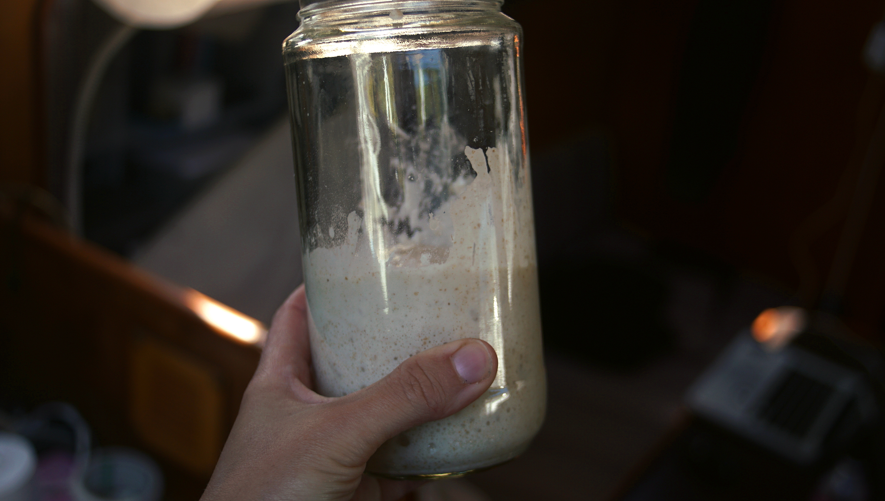

sourdough starter
1 serving — 15 minutes
Sourdough bread has been arounds for a long time. People are still making it today, even with the existence of baker's yeast.
The fermentation required to prepare it improves the flavor of the dough, and makes it easier for the body to absorb the dietary minerals present in the grains.
Making sourdough bread begins with a sourdough starter. The starter is a fermenting mixture of flour and water containing microorganisms which include wild yeast and lactobacilli. The yeast produces carbon dioxide which leavens the dough, and the lactobacilli produce lactic acid which contribute flavor. The process is simple, it requires more waiting than active cooking time. I've made a summary of common questions and concerns when it comes to making a starter.
WHY DISCARD?
Discarding starter is necessary as it quickly builds up in a jar and becomes difficult to manage. The discard works well in a variety of baked goods.
ADAPTING YEAST RECIPES
There are some key aspects to converting yeast recipes to sourdough, like hydration level and yeast. Hydration level is the ratio of water to flour in a starter. You can maintain or adjust the hydration level with each feeding based on the ratio of water to flour you feed your starter. Aiming for 100% hydration, or equal weights of flour and water, is recommended.
To calculate how much added yeast is necessary, first you have to know that the rising power of 7 g of yeast (1 packet) is roughly equivalent to 226 g (1 cup) of sourdough starter.
With this information it's easy to approximate the amount of added water, flour and yeast in a recipe.
FEEDINGS
The starter needs feedings at 12 h intervals daily in the first week, and once a day afterwards. As long as this starter culture is fed flour and water regularly it will remain active.
I forgot to feed my starter! Forgetting to feed the starter isn't a big deal, feed it as soon as you remember. Feedings of longer than three days acidify the dough and may change the microbial ecosystem.
Did i feed my starter too much? Feeding the wrong amount won't kill it, but it may make it appear too dry or too wet and may not rise as expected. You can correct the feeding by adding either more flour or water, it will right itself.
What's the liquid on top of my starter? This liquid is the alcohol given off as the wild yeast ferments. This doesn't mean it's going bad, it indicates that your starter is hungry.
FLOUR
Using wholemeal instead of processed flour for your starter is a good idea because it provides a variety of organisms and minerals.
FILTERED WATER
Using filtered (carbon filter) or distilled water instead of plain tap ensures good fermentation, as sourdough relies on microorganisms that chlorine inhibits. Leaving tap water uncovered for 24 h will allow the chlorine to dissipate.
Can my starter go bad? Starters require more attention on the initial 6-10 days it takes to create a healthy mature starter. It hasn't yet developed defenses that characterize a mature starter. Mature starter cultures are stable because of their pH level and the presence of antibacterial agents, this helps prevent colonization by unwanted yeasts and bacteria. Sourdough breads keep fresh longer than regular bread for this reason too. The ideal temperature for starters is 21 °C, but a bit higher and lower won't hurt it. Yeast dies at 60 °C. If you see an pink or orange streak on your starter, this is a sure sign it's gone bad, discard and start over.
Good luck with your starter, and be sure to give it a name! Mine is called Tikki.
 whole wheat flour 28 g
whole wheat flour 28 g water 60 ml
water 60 ml
starter
- Day 1. Come morning, mix 28 g (~1/4 cup) of whole wheat flour with 60 ml (1/4 cup) of filtered water in a jar. Stir well, and cover with a loosely-fitted lid. Allow to rest for 12 hours, then stir in the same quantities of flour and water.
- Day 2-3. Continue to feed starter in mornings and evenings. By day 3, bubbles will have formed and the starter will give off a sour smell.
- Day 4-6. Continue to feed morning and evenings. Start discarding all but 113 g (~1/2 cup) of the starter. Only discard before you feed it, not after. Why discard? Read the notes in the description above. More bubbles will appear, and the starter will start to grow in volume between feedings.
- Day 7-9. The starter will be very airy, especially a few hours after a feed. Continue to feed twice a day.
- Day 10. Feed once per day if kept at room temperature. It's now possible to start using the starter to make sourdough recipes.